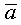
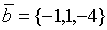
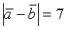

ЗАНЯТИЕ 2.2. ЛИНЕЙНЫЕ ОПЕРАЦИИ НАД ВЕКТОРАМИ
Контрольные вопросы
- Что такое орт вектора?
- Чему равны координаты орта вектора?
- О чем говорит пропорциональность координат двух векторов?
- Каким законам подчиняются операции сложения и вычитания векторов?
- Как производятся линейные операции над векторами, заданными разложениями в одном и том же
базисе?
- Что происходит при умножении вектора на число?
Задачи
- По данным векторам

и
 построить следующие векторы:
+ ,
-
,
- ,
- -
.
построить следующие векторы:
+ ,
-
,
- ,
- -
.
- Определить длины суммы и разности векторов
и
 .
- Векторы
и образуют угол
120° ,
причем .
Определить и
.
- Определить, при каких
и векторы
и
коллинеарны.
- Установить, служат ли точки А(2,3,-6), В(7,3,2), С(12,7,3), Д(12,11,-4)
вершинами трапеции АВСД.
- Найдите орт вектора .
- На плоскости даны векторы
и в базисе
. Найти разложение
вектора ,
принимая в качестве базисных, если это возможно, первые два вектора.
- Даны три вектора
в базисе .
Если векторы
 образуют
базис в , то найти
разложение вектора
по этому базису.
образуют
базис в , то найти
разложение вектора
по этому базису.
Ответы
-
- ,
;
- ,
 ;
- ;
- служат, ВС //АД;
- ;
- ;
- .